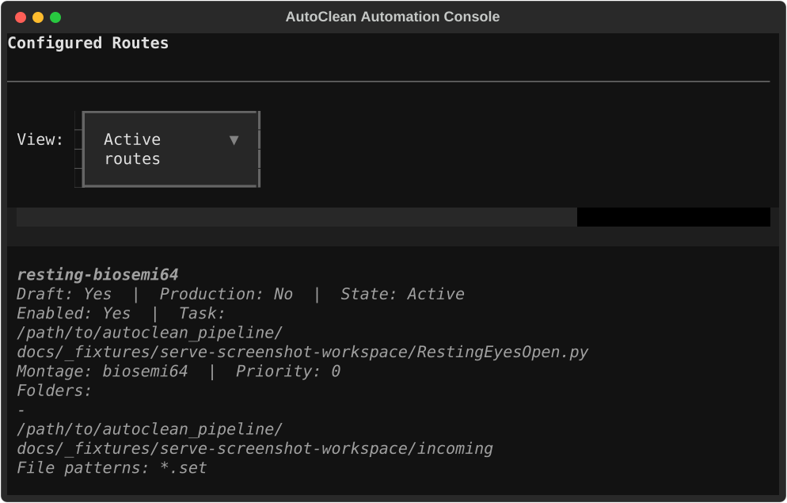
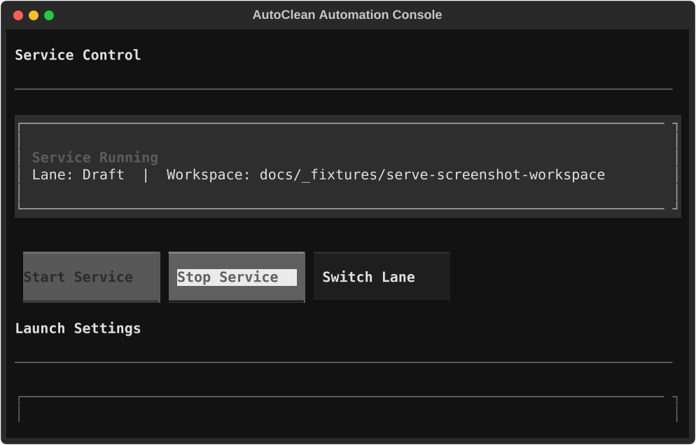

Set up your first serve route without guessing.
This tutorial walks one operator through the full first-route workflow: create a serve workspace, define a route in Draft, validate it, run it safely, promote it to Production, and know what to watch afterward.
What you are making
One route means one clear promise: “When files like this arrive in this folder, run this task with this montage.”
What you are not making
You are not creating a new queue for each route. The system keeps one Draft lane and one Production lane.
Where to start
Use this tutorial if you are setting up the first route in a workspace. Use the operator guide later for concepts and handoff.
Get these three things ready first.
1. A task file
Example: /path/to/RestingEyesOpen.py
2. A watch folder
Example: /data/incoming/resting
3. The montage name
Example: biosemi64
Make the working folder first.
This creates the serve workspace structure, test/live runtimes, and the baseline files that the route registry will compile into later.
autocleaneeg-pipeline serve workspace \ --mode new \ --path /path/to/serve-workspace
What you should see
serve-test.yamlserve-live.yamlroutes/runtimes/testandruntimes/live
Put the route in Draft first, not Production.
Draft is the proving lane. Create the route there, exercise it safely, and only promote it later when it behaves exactly the way you want.
Choose a clear route name
Use the task and montage so another person can recognize it immediately. Example: resting-biosemi64.
Open the TUI route form
Open the TUI, go to Routes, press N, fill in the route, and use Preview before Save. This is now the primary operator path.
TUI-first route creation
- Open
autocleaneeg-pipeline serve tui --path /path/to/serve-workspace --mode test. - Go to Routes.
- Press N.
- Fill in route ID, task file, montage, folders, and file globs.
- Press Preview to verify resolved paths and sample matching files.
- Press Save Route.
What this should create
routes/resting-biosemi64.yaml- a generated Draft config in
serve-test.yaml - a generated Production config in
serve-live.yaml
Optional TUI check
Confirm the route appears in Draft. Use Enter to inspect details, E to edit safely, and X later if the route should be archived.
Actual route screen capture

This is a real captured screen from the current route-first TUI, using a stable example workspace.
Confirm the generated Draft config is usable.
Use the built-in validation action
From the TUI, press V or choose Validate Config from the dashboard. Validation still checks the generated Draft config, but you no longer need to start from the shell to use it.
What good looks like
- no missing-path errors
- the route appears in Draft only
- the task file and watch folder are correct
If validation fails
Do not promote anything yet. Fix the route definition in the TUI, use Preview again, and save. Idempotent setup means repeating that edit flow is expected and safe.
Exercise the route in Draft before trusting it.
The safest first pass is a Draft run with limits. The goal is to prove the route, not to let it run forever on day one.
Use the Service screen
Switch to Service, keep the lane on Draft, turn on Dry Run, set low limits such as one cycle and one idle limit, then start the service from there.
What to verify
- the route is selected correctly
- the right files are considered ready
- the output command matches the task and montage you intended
TUI route actions you can use now
- N opens the create-route flow
- E edits the selected route
- T enables or disables the selected route
- X archives or restores the selected route
- P promotes the selected route to Production
- S syncs the generated configs after route updates
Actual service screen capture

This is a real captured service screen showing the command, config source, queue path, log path, and recent service output.
Promote the same route. Do not rebuild it from scratch.
Use the route action
From Routes, select the route and press P. The same route moves into Production. You are not cloning it, renaming it, or creating a second workflow.
What should change
- the route now belongs to both Draft and Production
serve-live.yamlnow includes the route- you still have only one route definition, not two near-duplicates
One more step before processing changes
Promotion updates the draft/operator config first. Open Settings and click Apply before you expect the processing service to use the Production change.
Use these checks to stay boring in Production.
Route state
Is the route enabled? Is it still clearly named? Does it belong in Draft only or in both Draft and Production?
Validation changes
If a folder, file glob, or task changes, edit the route in the TUI, preview it again, save it, then validate the lane before you trust the change.
What not to do
Do not create a new queue for every route. Do not clone almost-identical routes just because one field changed.
What to read next
If the route already exists and you need to change it safely, use the edit tutorial next instead of improvising a config change.
Avoid these on the first route.
Starting in Production
Do not do this. A first route belongs in Draft until you have validated it and seen it behave correctly.
Creating one queue per route
The architecture is route-first, not queue-per-workflow. Keep the one Draft lane and one Production lane.
Editing generated config files first
serve-test.yaml and serve-live.yaml are generated outputs. The route registry is the safer source of truth.
Cloning nearly identical routes
If it is still the same job, update the route. Make a new route only when the workflow is meaningfully different or live behavior must stay untouched.